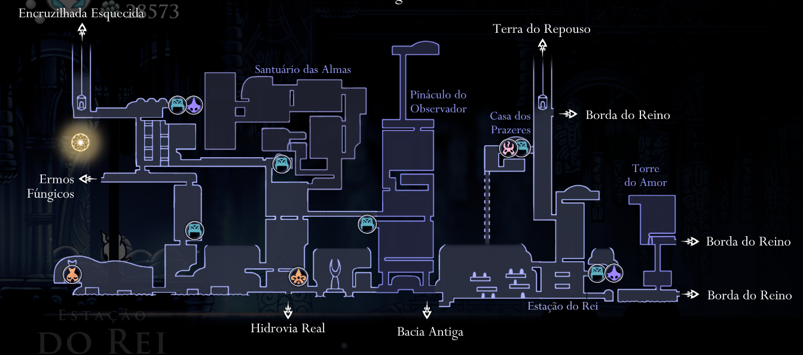
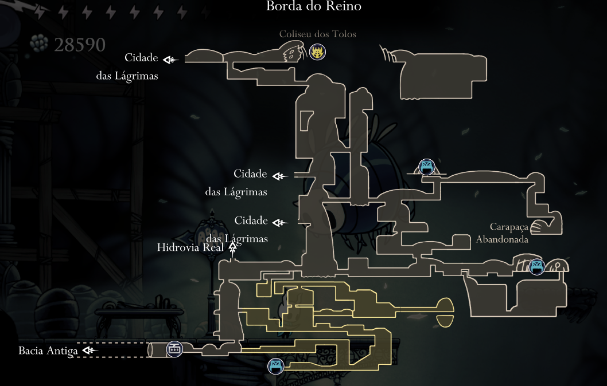

Mapa.(Soundtracks tiradas do album do jogo no spotify.)
Penhascos Uivantes.
Dirthmouth.
Encruzilhada Esquecida.
Caminho Verde.
Ermos Fungicos.
Cidade das Lagrimas. 
Pico de Cristal.
Terra do Descanso.
Hidrovia Real.
Bacia Antiga.
Borda do Reino. 
Ninho Profundo.
Jardins da Rainha.
Canion da Névoa.

Video de como desbloquear o mapa de todas as areas do canal Kaik3 kira.